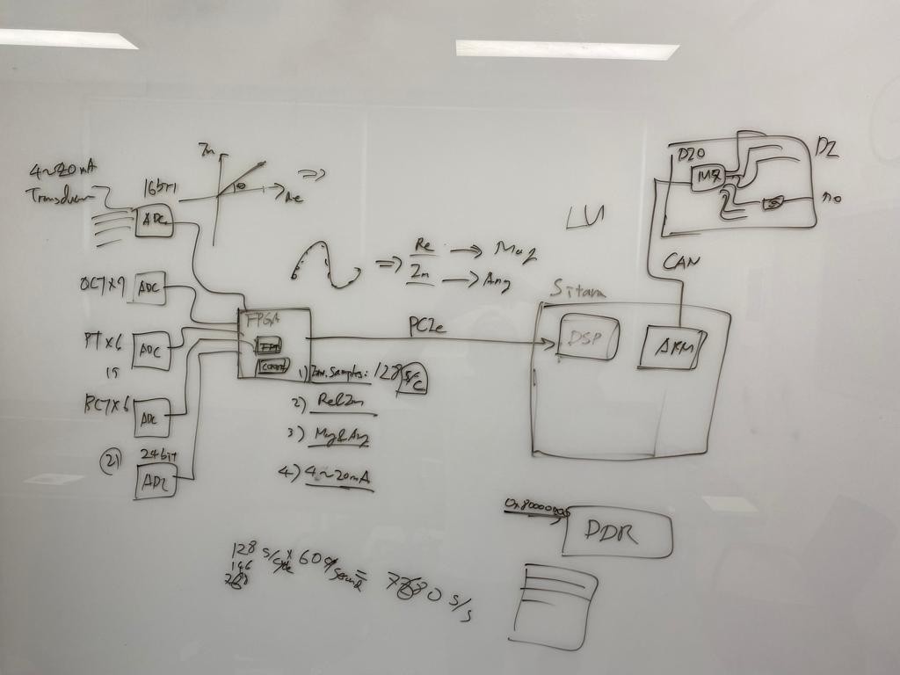
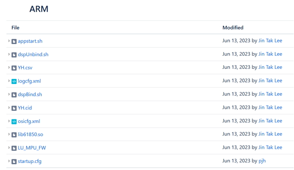
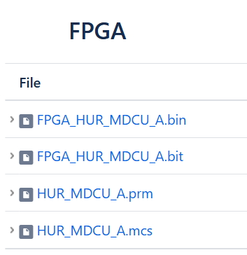
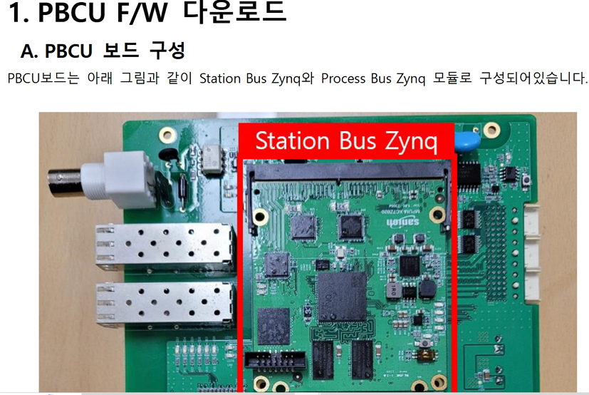

Hand Drawing diagram of LU IED structure. FPGA collects data from 4/5 Analog Devices 24Bit ADC and send it to
DSP over PCIe bus. The DSP and the Sitara processor are in one package. The DSP runs a FreeRTOS app with 5/6 tasks
and shares a memory address or memory area as a DTB device accessible to Linux system.

Setting up development environment for dsp is tedious. Development studio CCS 8.2 . which is backed up in some drives. 1. CCS8.2.0.00007_win32 2. ti-processor-sdk-rtos-am57xx-evm-05.02.00.10-Windows-x86-Install.exe
These will be installed in C:/ti location.
Setup files are casually downloaded in D:/platform folder.
Check Files required to run LU
page for setting up LU Linux images.
This page has the files attachments as below:
 DSP # HUR_DSP.out

We already have most of the files for LU. But we do not have the FPGA files except Confuence page.
So we keep the FPGA Files in sanion_c_codes repository.
We found another document related to IM2 Firmware Update IM2_다운로드_절차서_230516.pdf also uploaded to sanion_c_codes repository.
